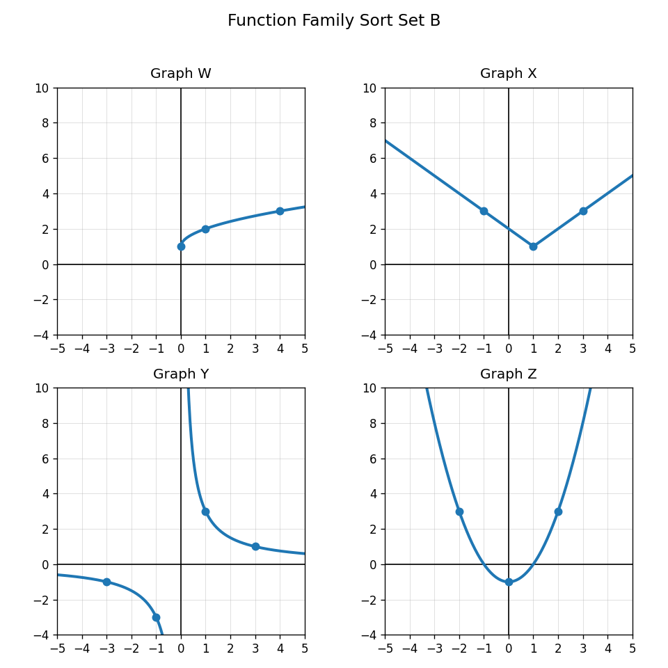
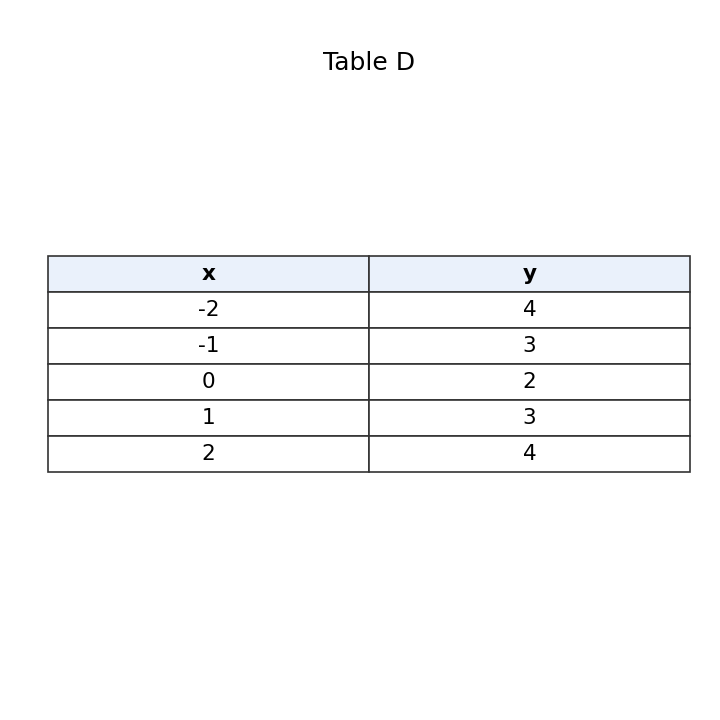

Use Sort Set B. Which graphs show a V-shape, a U-shape, a curve with an endpoint, and two separated branches?

Classify each equation and state one feature you expect in its graph.
A student says Table D must be linear because the outputs go down and then up by 1. Critique the reasoning.

Create a mini card sort with one equation, one table, and one context that all represent the same function family. Explain how someone could verify the family.
Define solution to a system of inequalities.
How many constraints are represented by $x\ge 0$, $y\ge 0$, and $2x+3y\le 18$?
What do $x\ge 0$ and $y\ge 0$ usually mean in a real-world context?
What boundary line belongs with $2x+3y\le 18$?
Determine whether $(3,4)$ satisfies all three constraints.
$$x\ge 0$$
$$y\ge 0$$
$$2x+3y\le 18$$
In a production model, what could $(3,4)$ mean?
A student tests only the first inequality and says the point is feasible. Explain why this is incomplete.
Write a short decision rule for choosing a feasible point from a graph of a system of inequalities.
For $3x+2y<12$, should the boundary be solid or dashed?
Solve $3x+2y<12$ for $y$.
Explain why a test point can help decide which side of the boundary to shade.
Design an inequality whose graph would be useful for representing a time limit.